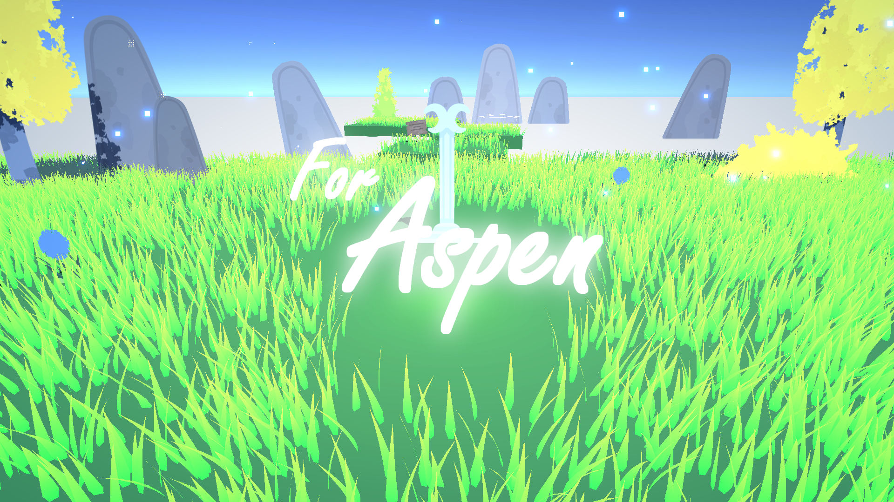
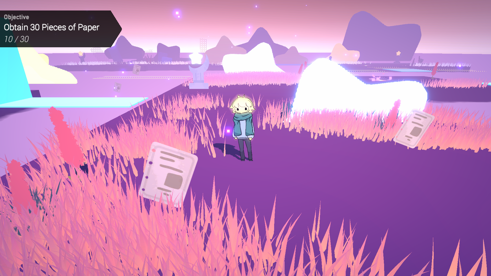
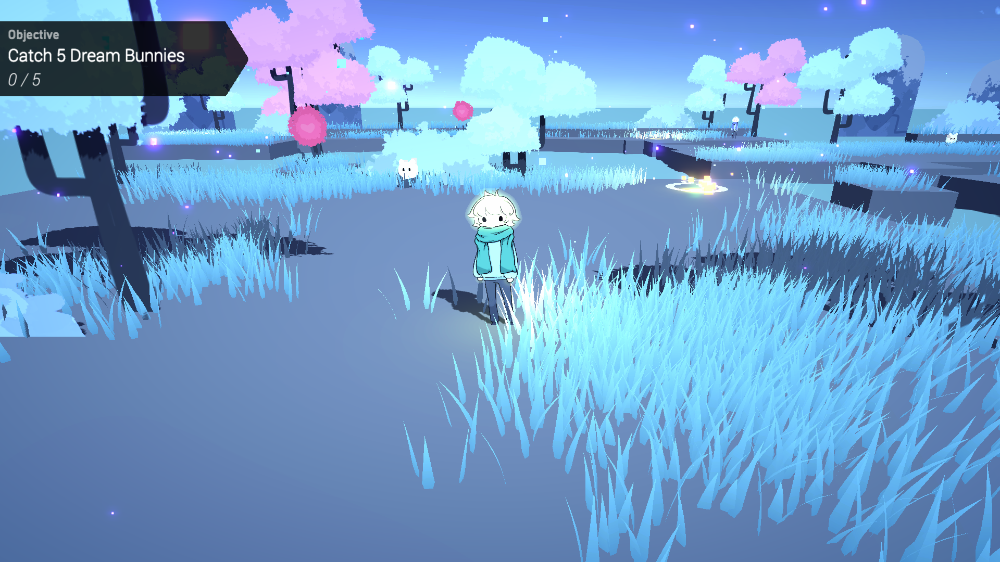

For Aspen
May 2023
"For Aspen" is a 3D adventure game where you take beautiful trek through your mindscape in order to prepare for a ceremony. This was
my first time using shaders in Unity!
Made for the Games Den Anthology Winter 2023.

Made for the Games Den Anthology Winter 2023.
Unity
Clip Studio Paint
Details
My main goal with "For Aspen" was to create a game mainly focused on atmosphere and environments, particularly in 3D. As such, I spent
time learning about the shader graph system in Unity to create my own shaders. With the exception of the
Grass System by Minionsart, all the shaders where made by me!
Learning about post-processing and lighting was also huge, and really helped with achieving the atmosphere I wanted to create in this game.
I also focused on creating a well-designed and easy-to-understand architecture, using game dev design patterns.
I also focused on creating a well-designed and easy-to-understand architecture, using game dev design patterns.

